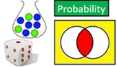
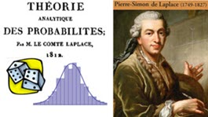
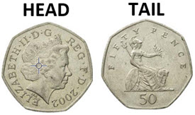
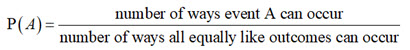
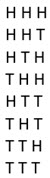
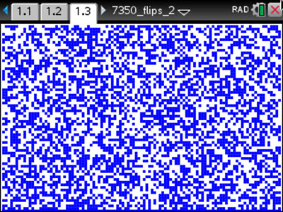
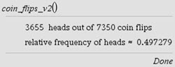

IB Docs (2) Team
IB Docs (2) Team

Probability introduction (SN)
… It is remarkable that this science, which originated in the consideration of games of chance, should become the most important object of human knowledge … The most important questions in life are, for the most part, really only problems of probability.
Pierre Simon de Laplace (1749-1827)
∼ Student Notes ∼
Section 4E. Probability introduction

Sub-sections on this page:4E.1 Origins
4E.2 Terminology
4E.3 Flipping three coins
4E.4 Theoretical probability vs experimental probability

4E.1 Origins
Games of chance, such as those that involve the rolling of dice, have been around for over 5000 years. For nearly as long as that, people have been trying to determine (or at least estimate) their chances (i.e. the probability) of winning such games. It’s interesting to note that the mathematical study of probability owes its origin almost entirely to efforts to answer questions about gambling. Although there were earlier attempts to study dice probabilities – including Girolamo Cardano (1501-1576) and Galileo Galilei (1564-1642) – it’s commonly accepted that modern concepts of probability originated in 1654 when two of the greatest mathematicians of the time, Blaise Pascal (1623-1662) and Pierre de Fermat (1607-1665), corresponded with each other when trying to solve some gambling problems that involved the rolling of dice. Some decades later, Pierre-Simon Laplace (1749-1827), made a significant contribution to the development of the mathematical theory of probability with an emphasis on scientific applications in his 1812 book Théorie analytique des probabilités (Analytic theory of probability). In the 19th century, James Clerk Maxwell (1831-1879) and Ludwig Boltzmann (1844-1906) introduced the ideas of probability and random events into the laws of physics with the kinetic theory of gases. Important aspects of the laws of quantum mechanics, developed in the first half of the 20th century, relied on the mathematics of probability.

is formed as an equilateral-curve heptagon, or
Reuleaux polygon, a curve of constant width.
4E.2 Terminology
Let’s consider flipping a single coin. Unless stated otherwise we assume a coin (or a die) is fair which means that all possible results, or outcomes (landing ‘heads’ or ‘tails’ in the case of a coin) are equally likely. Flipping a coin is an example of a random experiment because the possible outcomes (head or tail) are equally likely resulting only from chance. Each repetition of an experiment is a trial. The set of all possible outcomes for an experiment is called the sample space. An outcome, or set of outcomes, is considered an event and commonly labelled with a capital letter. For example, H can represent obtaining a 'head' when flipping a coin. The probability of an event occurring is a ratio that compares how many ways it can occur to how many way all the outcomes in the sample space can occur. Since the probability is for an event associated with a random experiment, we consider the probability to be theoretical since it expresses what we expect to happen. If we flip a fair coin 1000 times we expect that 500 of these will show 'head' but understand that this is not certain. However, it makes sense that as we flip the coin more and more the ratio of 'head' results to the total # of flips will get closer and closer to \(\frac{1}{2}\). This ratio that uses observed data from multiple trials of a random experiment is not a theoretical probability, but an experimental probability.
Theoretical probability of an event
If all outcomes in the sample space of a random experiment are equally likely, then the theoretical probablity of event A is given by

where \({\textrm{0}} \le {\textrm{P}}\left( A \right) \le 1\). If \({\textrm{P}}\left( A \right) = 1\), then event A is certain to occur; and if \({\textrm{P}}\left( A \right) = 0\), then it is impossible for event A to occur.

4E.3 Flipping three coinsBefore we look at a couple of the dice games that lead Pascal and Fermat to develop a mathematical method for determining probabilities, let’s consider a simpler game that involves simultaneously flipping three coins - and use the above definition to compute the probability of two different events. Event A is all three coins show 'heads'; and event B is at least two of the coins show 'heads'. Determining the sample space for an experiment is essential for finding the probability of an event that is a subset of the sample space. The sample space is the same for events A and B. The eight possible outcomes when flipping three coins are listed in the figure at right. Note that event A is a single outcome (HHH) and event B consists of more than one outcome. It is clear that \({\textrm{P}}\left( A \right) = \frac{1}{8}\) because there is only one way for three heads to occur and there are eight equally likely outcomes in the sample space. What about \({\textrm{P}}\left( B \right)\)? Remember, event B is getting at least two heads when three coins are flipped. Well, one outcome (HHH) has three heads and three other outcomes (HHT, HTH, THH) have two heads. These can be referred to as the favourable outcomes with regard to getting at least two heads. Thus, there are four ways for at least two heads to occur which means that \({\textrm{P}}\left( B \right) = \frac{4}{8} = \frac{1}{2}\).
Explore what occurs when flipping three coins simultaneously with the Geogebra applet below. You can input how many flips of the three coins to be carried out. The # of flips is the # of trials for this random experiment of flipping three coins. Results are displayed in a histogram on the right side. How does the theoretical probability for events A and B compare to the experimental probability for multiple trials of flipping three coins with the applet?
4E.4 Theoretical probability versus experimental probability
As discussed above in connection to the definition that was presented for the theoretical probability of an event, the calculation of an event's theoretical probability is based on the fact that all possible outcomes in the experiment's sample space are equally likely. If the \(n\) possible outcomes for an experiment are all equally likely then the probability of one of the possible outcomes occurring is \(\frac{1}{n}\). If an event consists of more than one outcome (as happened with event B above: getting at least 2 heads when flipping 3 coins), then the probability is the number of those 'favourable' outcomes (i.e. the # of outcomes that produce the result you're looking for) divided by the # of all possible outcomes in the sample space (sometimes referred to as the 'size' of the sample space). Hence, the 'formula' for the probability of an event A presented in the Formula Booklet for this course is for the theoretical probability of event A.
Analysis & Approaches Formula Booklet (theoretical probability)
Probability of an event \(A\) (with sample space \(U\)): \({\textrm{P}}\left( A \right) = \frac{{n\left( A \right)}}{{n\left( U \right)}}\)
where \(n\left( A \right)\) is the # of outcomes that result in event A occurring ('favoruable' outcomes), and \(n\left( U \right)\) is the # of possible outcomes (size of the sample space)
However, there is another way to try and calculate the probability of an event; especially if the outcomes in the sample space are not all equally likely and/or if it is difficult (or impossible) to determine all the outcomes in the sample space. In this situation, we coud repeat the random experiment many, many times (i.e. for a large # of trials) and simply count how many times (frequency) we obtain a favourable outcome. In this approach, we are estimating the probability of an event by finding the relative frequency - or experimental probability - of the event in repeated trials of the indicated experiment. As the # of repeated trials increases, the limit of the relative frequency will become a better and better estimate of the event's theoretical probability. This experimental probability approach requires the capability of repeating a random experiment for a reasonably large # of trials. This is not always easy to do. This is one reason why calculating an experimental probability will not be the method that you will use to answer any probability question on a quiz, test or exam for this course. However, you may decide to use this approach in an Exploration (IA) that explores a probability topic.
Repeatedly tossing a coin and experimental probability
In the 18th century the French mathematician and naturalist Georges-Louis Leclerc, count de Buffon, (known for the famous Buffon's needle problem) tossed a coin 4040 times resulting in 2048 heads. The relative frequency of approximately 0.50693. In the early 20th century, the English mathematician Karl Pearson tossed a coin 24,000 times and obtained 12,012 heads. The relative frequency of Pearson’s experiment was 0.5005, even closer to the theoretical probability of 0.5 for a fair coin.
Another way of conducting the random experiment of repeatedly tossing a coin to determine the experimental probability (relative frequency) of obtaining heads is to write a computer/calculator program that makes use of a random number generator to "toss a coin" (e.g. randomly generate a 0 or a 1 where a 0 can represent 'tails' and a 1 can represent 'heads'). Such a program was written for the TI-Nspire that modelled flipping a coin 7350 times. The calculator's graph window can be divided into 105 columns and 70 rows creating 7350 small squares (105 x 70 = 7350). Each square represents the result of one of the coin tosses: tails (0) makes a square blank (white), and heads (1) fills in a square (blue). The image below shows one result of running this program on the TI-Nspire; and that the relative frequency of heads was \(\frac{{3655}}{{7350}} \approx 0.497279\)


What if repeatedly tossing a coin resulted in a relative frequency of heads (or tails) that did not approach the theoretical probability of 0.5? In that case, we would have to conclude that the empirical evidence is showing that the coin is probably not a fair coin; there is a greater (or lesser) chance of getting heads than tails.
 Twitter
Twitter
 Facebook
Facebook
 LinkedIn
LinkedIn